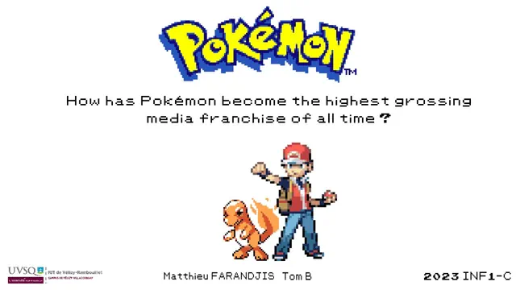

The Pokémon History
Pokemon

Terminé
Langue :
Présenté le :
20/04/2023
Outil
Microsoft PowerPoint
Equipe
Matthieu FARANDJIS
Tom B.
Plus sur le projet
Présentation
Après l'exposé sur le TGV M, voici l'exposé sur la licence Pokémon !
Notre professeure nous a proposé différents exposés dont : "How has Pokémon become the highest grossing media franchise of all time ?"
(Comment Pokémon est devenu la plus grande licence de tous les temps ?).
Étant un grand fan immense fan de cette licence, c'était une évidence
que j'ai fortement suggéré à Tom qu'on choisisse ce sujet.
J'ai créé l'entièreté du Diaporama (sauf la dernière diapositive), bien sûr, j'ai utilisé des ressources venant d'Internet.
Cependant, j'en ai modifié certaines.
Je partage également le contenu de l'introduction, de la partie 2 et 3 de l'exposé.
J'ai fait la conclusion sur feuille et Tom s'est occupé des parties 1, 4 et 5.
Sommaire
Presentation
The origin of Pokémon and its slight success
The sensational discovery of Mew
The internalization of Pokémon
Pokémon today
Conclusion
Partie 1 - Presentation
Dans cette partie, Tom présente les personnes ayant eu un rôle fondamental pour la création des premiers jeux Pokémon.
Les personnes présentées sont : Satoshi Tajiri, Ken Sugimori, Junichi Masuda, Shigeru Miyamoto et Tsunekazu Ishihara.
Satoshi Tajiri est le créateur de Game Freak et le créateur de Pokémon. Ses deux principales passions sont les insectes et les jeux vidéo.
Ken Sugimori à rejoint Satoshi Tajiri pour son magazine Game Freak avant de le transformer ensemble en studio de jeux.
Il a participé à la conception des Pokémon et à créer les graphismes du jeu.
Junichi Masuda à rejoint GAME FREAK pour la création des musiques des jeux. Il est donc le compositeur des musiques de Pokémon Rouge, Vert, Bleu et Jaune.
Nous ne l'avons pas abordé, mais il a un rôle crucial dans la création des jeux. Il a sauvé plusieurs fois le projet (voir le manga biographique de Satoshi Tajiri).
Tsunekazu Ishihara Ancien directeur de Creatures Inc et actuel directeur de The Pokémon Company, il a permis de faire le lien entre Game Freak et Nintendo.
Il suivait de près la progression du projet.
Shigeru Miyamoto, papa de Super Mario, de The legend of Zelda et bien d'autres licences à succès, il a cru au projet de Satoshi Tajiri.
Sa présence a permis de gagner l'intérêt de Nintendo pour les jeux. Sa plus grande action ? Avoir permis à Pokémon Rouge et Vert de bénéficier de plus de mémoire sur la cartouche.
Tom présentait brièvement également GameFreak et The Pokémon Company.
La licence appartient à la fois à Nintendo, Creatures Inc et GAME FREAK.
The Pokémon Company est seulement la structure qui dirige les produits dérivés Pokémon.
Partie 2 - The origin of Pokémon and its slight success
J'expliquais comment l'idée de concevoir Pokémon Satoshi Tajiri lui est venue à l'esprit.
J'ai également expliqué son état d'esprit sur les façons de créer un jeu révolutionnaire.
Sans oublier, ce qu'il voulait transmettre avec Pokémon.
Partie 3 - The sensational discovery of Mew
Avant de parler de Mew, j'explique comment les Pokémons sont indexés.
L'objectif derrière est de montrer brièvement comment le jeu chargeait les Pokémon en combat,
mais également faire comprendre comment Mew a pu être ajouté discrètement.
Parler de l'index Pokémon signifiait également parler des bugs.
Même si je juge qu'il était obligatoire d'en parler pour comprendre la découverte de Mew,
la première génération de Pokémon regorge de mystère !
Il serait donc dommage de ne pas en parler...
J'expliquais ainsi que Mew a été ajouté à la dernière minute dans l'index, comme un simple easter egg.
J'ai parlé de son dévoilement par Satoshi Tajiri dans le magazine Coro-Coro Comic, du concours et que
c'était de cette manière que le succès de Pokémon a commencé.
J'ai rapidement abordé l'apparition du JCC Pokémon et du dessin animé.
Partie 4 - The internalization of Pokémon
Si au Japon, Mew a lancé le succès, en occident, Mew n'a pas été attendu !
L'arrivé de Pokémon a été calculé afin de préparer les enfants à ce succès.
Entre censure et réadaptation, la localisation d'un univers basé principalement que sur
le Japon a eu une très grande importance.
Tom a également abordé de la "Pokémania" en France, événement important de l'internalisation de la licence.
Partie 5 - Pokémon today
Toujours avec l'existence des jeux, du JCC Pokémon et du dessin animé, aujourd'hui il y a les mangas,
produits dérivés et bien d'autres autour de la licence.
Mais c'est surtout aujourd'hui, une immense communauté soudée.
Que ce soit autour des tournois mondiaux ou locaux, des fan-art, légendes, fangames et autres creepy pasta
(histoires terrifiantes), Pokémon est devenu omniprésent dans la vie de nombreuses personnes.
Partie 6 - Conclusion
Si Pokémon a plu, c'est parce que tout le monde s'y retrouvait, peu importe l'âge,
la nationalité, le genre, le type de joueur...
La notion d'échange a permis de faire découvrir le jeu par le bouche-à-oreille.
Mew quant à lui a permis de faire vivre de nombreuses légendes, tout en ayant poussé les
joueurs à faire preuve d'imagination pour l'attraper enfin.
Pokémon, c'est une histoire et une fanbase importante qui fait vivre et fera toujours vivre la licence.
Si la licence a connu un développement chaotique et une sortie trop tardive ayant provoqué de faibles ventes,
elle cachait bien son jeu.
Outils utilisés
Microsoft (365) PowerPoint → Diaporama
Paint.NET → Retouche/Création des images
CyberLink PowerDirector → Créations des textes dégradés avec ou sans contour
Dafont → Polices des jeux Pokémon
Mirillis Action! → Enregistrement des vidéos en .mp4
convertio.co → Conversion .mp4 en .gif